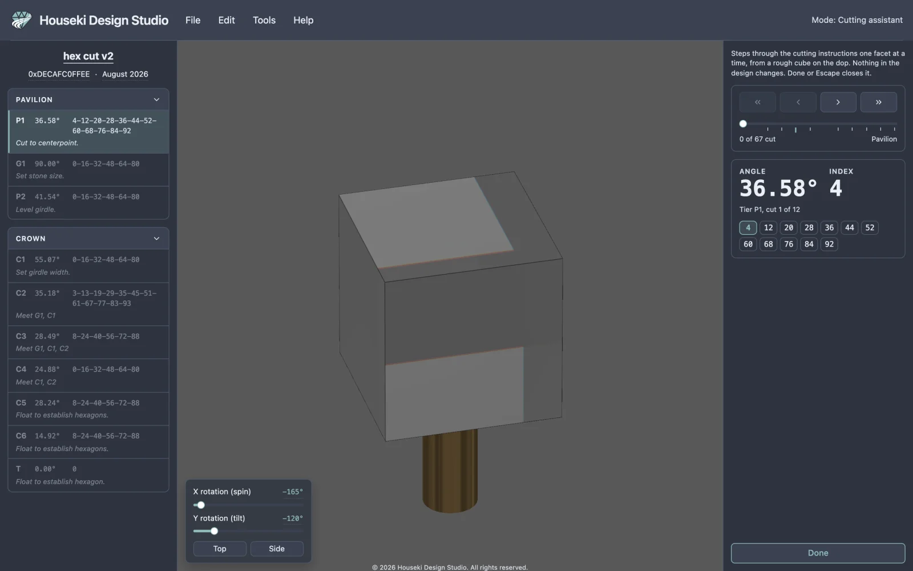
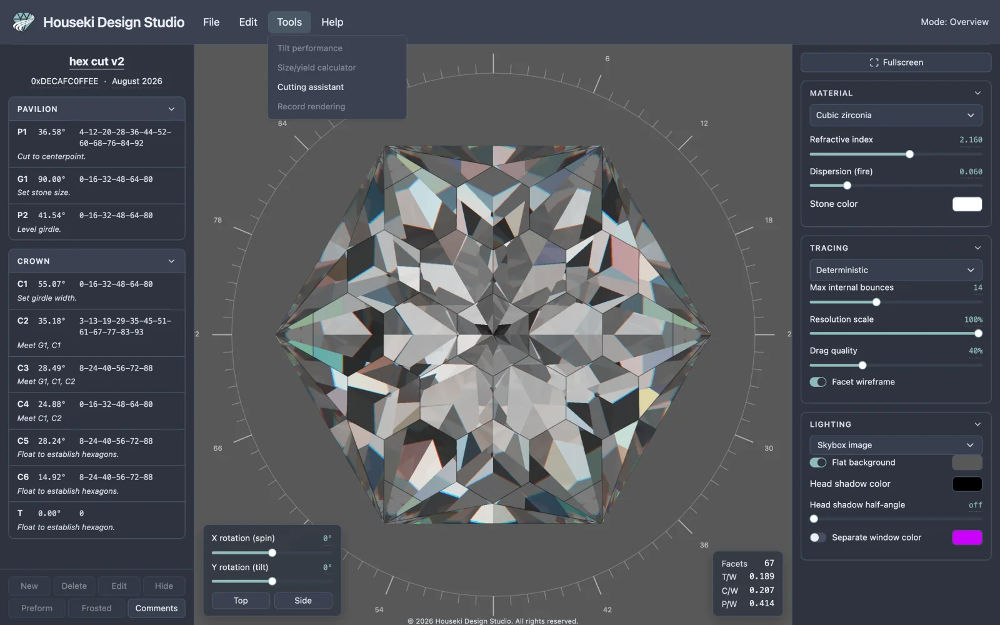
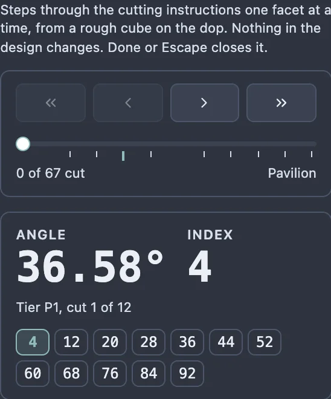
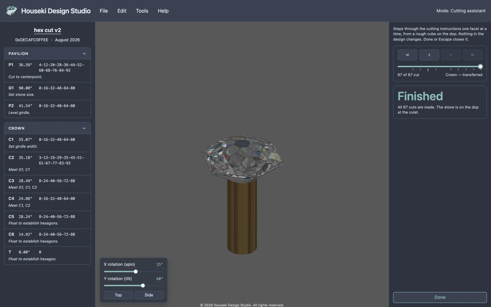
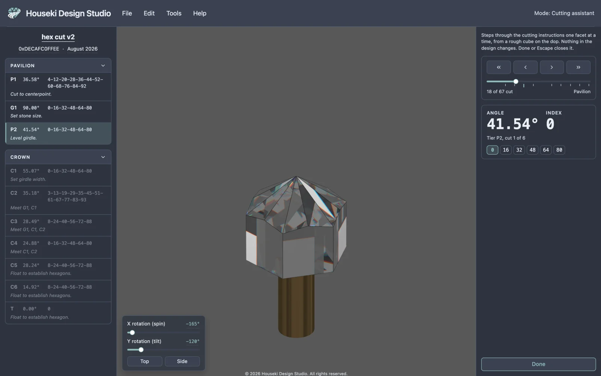
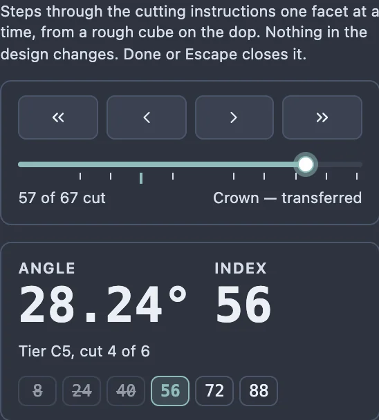

The cutting assistant walks you through a design tier by tier, the way you'd cut it at the machine: starting from a rough on the dop and adding one facet at a time, in the same order the cutting instructions list them. It never changes your design — it only shows what the stone looks like at each step, so you can check the sequence, the angles and the index settings before you touch the lap.

Choose Tools > Cutting assistant from the menu bar.

The menu item is greyed out (with a tooltip explaining why) while another mode — editing a tier, scaling height, or resizing the girdle — is already open. Finish or leave that mode first (its own Done, Cancel, or Escape), then open the cutting assistant.
The cutting assistant is a window onto your design, not an edit: nothing you do inside it is saved, and there is no Cancel button because there is nothing to undo.
Once it opens, the top bar's mode readout, at the right-hand end, reads Mode: Cutting assistant — a reminder, from anywhere on the page, that you're in the walkthrough rather than looking at your finished design.
The render itself is replaced by a rough — a plain block, larger than the finished stone — sitting on a bronze rod, the dop. As you step through the cuts, facets appear on the rough one at a time, in the same order your cutting instructions list them, so the stone on screen always matches what you've cut so far and nothing more. The stone's own selection and corner statistics are switched off while this is open, since the shape on screen isn't the design's own stone; a click on it selects nothing.
On the left, the cutting instructions stay exactly as usual, except that:
On the right, in place of the render settings, is the cutting assistant's own bar:

When every facet is cut, the big text reads Finished instead of an angle and index, and the stone on screen is the whole design, still shown on the dop at the culet.

Every way of moving through the sequence keeps the bar, the tier list and the stone in step with each other.
| Control | What it does |
|---|---|
| Previous tier | Back to the first facet of the tier you're in, once some of it is cut; press it again to go back a whole tier further, the way a media player's "previous" button restarts the track before it skips back. |
| Previous cut | Undoes the last facet cut into the rough, one at a time. |
| Next cut | Cuts the facet the bar is currently showing. After a tier's last facet, it moves straight on to the next tier's first. |
| Next tier | Cuts the rest of the current tier at once, so the next tier's first facet becomes current. |
The first two buttons fade out at the very start of the sequence, and the last two fade out once the stone is finished — clicking a faded button does nothing, but its tooltip still explains itself.
You can also:


| Key | Does the same as |
|---|---|
| → | Next cut |
| ← | Previous cut |
| Shift+→ | Next tier |
| Shift+← | Previous tier |
| Escape | Done (see below) |
The arrow keys only step the cuts when the slider itself doesn't have the keyboard's focus — if you've just clicked the slider, its own left/right arrow keys move it by one cut instead, which comes to the same thing.
The dop only shows up in the Deterministic and Flat renderers, not in Monte Carlo. So if the picker at the top of the Tracing section is set to Monte Carlo when you open the cutting assistant, it switches you to Deterministic for as long as the assistant is open; if you're already on Deterministic or Flat, it leaves your renderer alone. Either way, closing the assistant puts your own renderer choice back. This temporary switch is never saved as your default, so reloading the page in the middle of a walkthrough starts you back in Monte Carlo if that's your usual setting. See Deterministic renderer and Monte Carlo renderer.
Click Done at the bottom of the bar, or press Escape — both do the same thing. Your design comes back exactly as it was; nothing the cutting assistant did is ever kept.
Undo and Redo are switched off while the cutting assistant is open, since there's nothing to step back through — none of the stepping above changes your design.